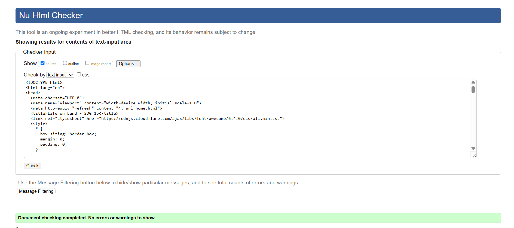
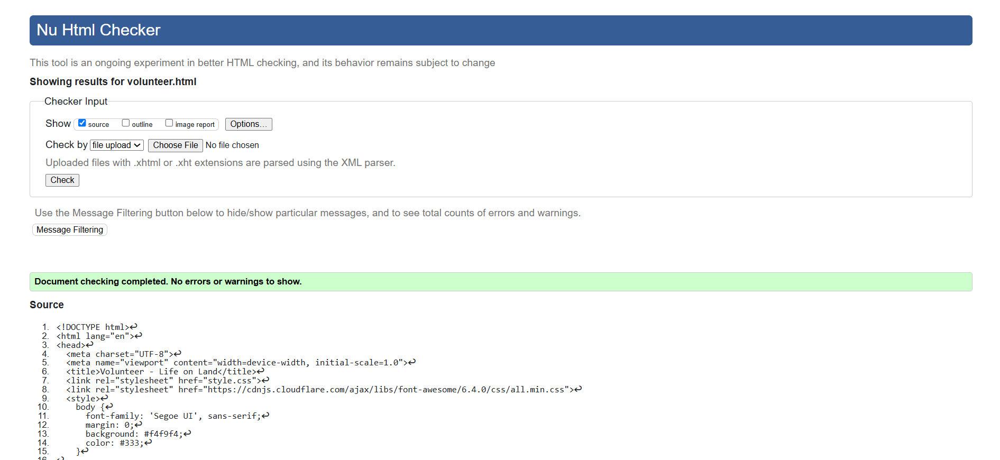
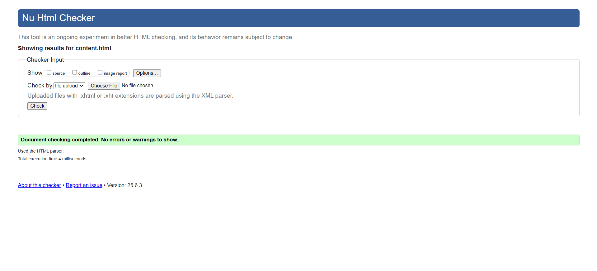
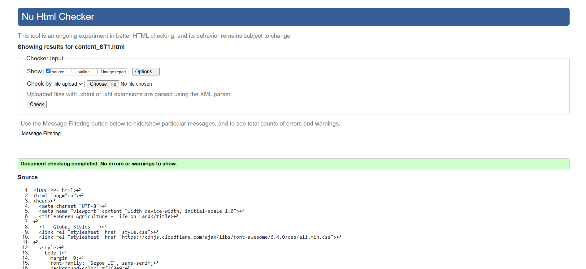
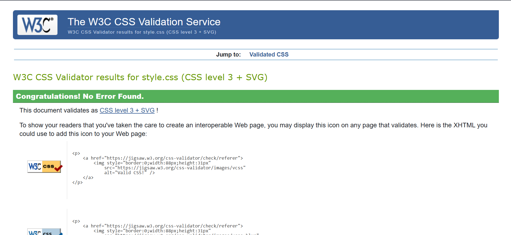
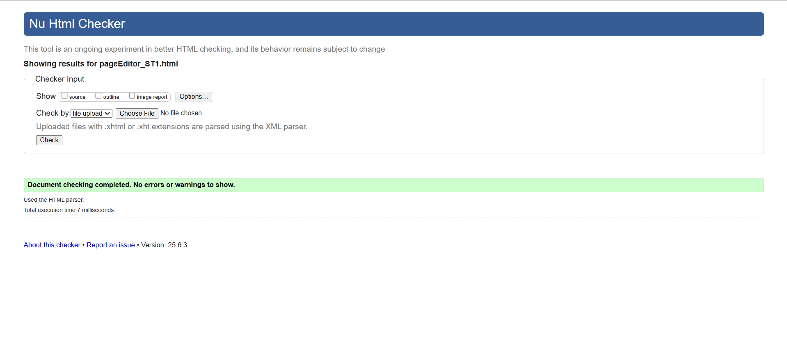
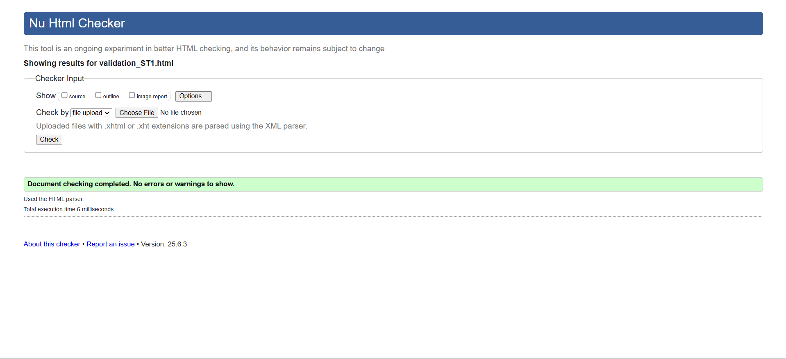

Student Details
Student Name: Venuja HansithStudent ID: w2149607
Module: 4COSC011C Web Development
Coursework: Coursework 1 – Website Validation Evidence
Date: 07th of July 2025
Validation Evidence Overview
This page documents the validation process for the web pages I implemented as part of the 4COSC011C coursework. It demonstrates compliance with web standards, accessibility, and good coding practices.
Validation Tools Used
Validation was performed using the W3C HTML Validator and W3C CSS Validator.
All pages were also checked for accessibility best practices, such as using semantic HTML, proper alt text for images, and sufficient color contrast.
| Page | HTML Validation/ CSS Validation | Notes |
|---|---|---|
| Splash Screen | Passed | No errors |
| Volunteer Page | Passed | No errors |
| Main Content Page | Passed | No errors |
| Individual Content Page | Passed | No errors |
| Style Sheet | Passed | No errors |
| Page Editor | Passed | No errors |
| Validation Page | Passed | No errors |
Splash Screen

Volunteer Page

Main Content Page

Individual Content Page

Style Sheet

Page Editor

Validation Page

Reflection
All my pages passed W3C HTML and CSS validation. During the process, I corrected meta tag issues, ensured all images have descriptive alt text, and confirmed the structure complies with HTML5 standards. Validation also helped me identify and fix accessibility issues, such as proper heading structure and ARIA usage. I learned to resolve common errors and warnings, and now better understand the importance of semantic markup for both users and search engines. This experience reinforced the value of using validation tools regularly to catch errors early, improve accessibility, and ensure cross-browser compatibility in all my future web projects.
↑